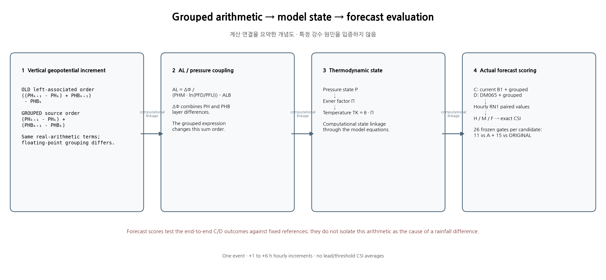
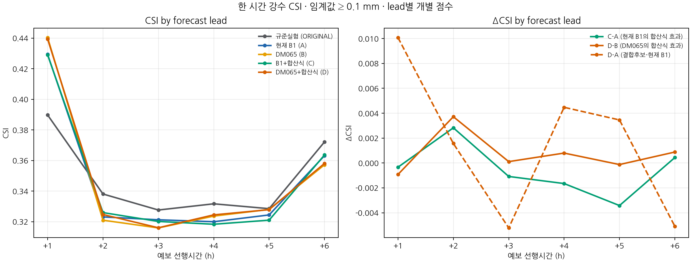
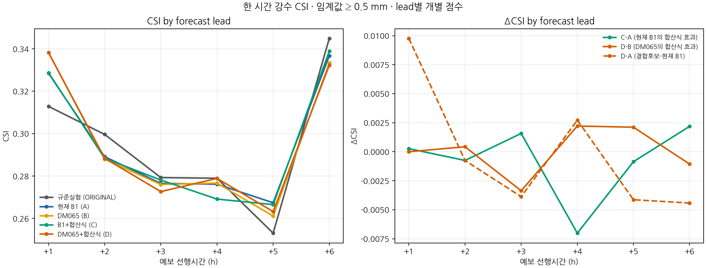
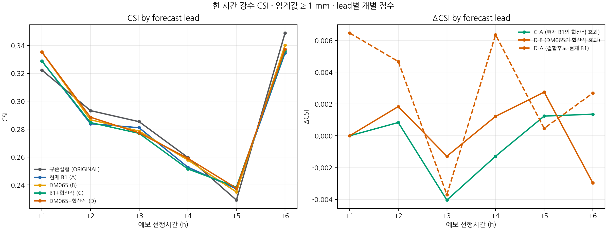
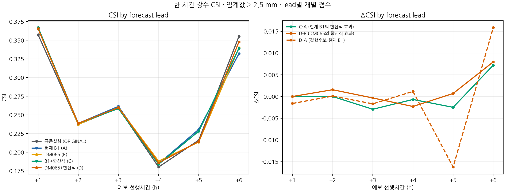
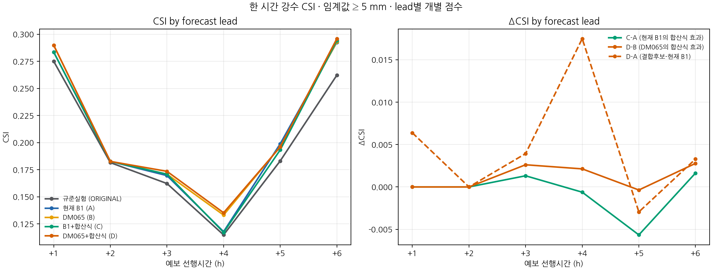
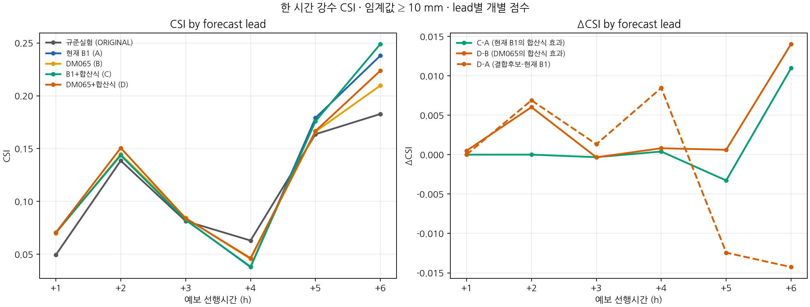
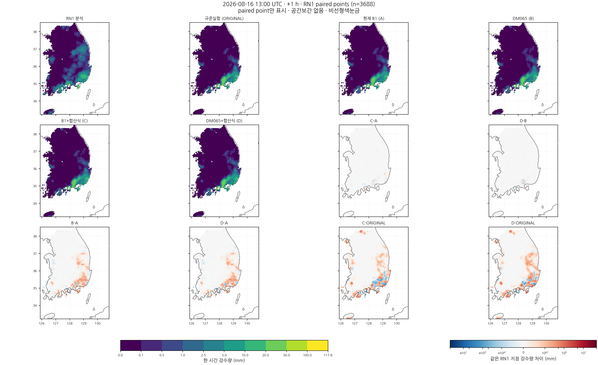
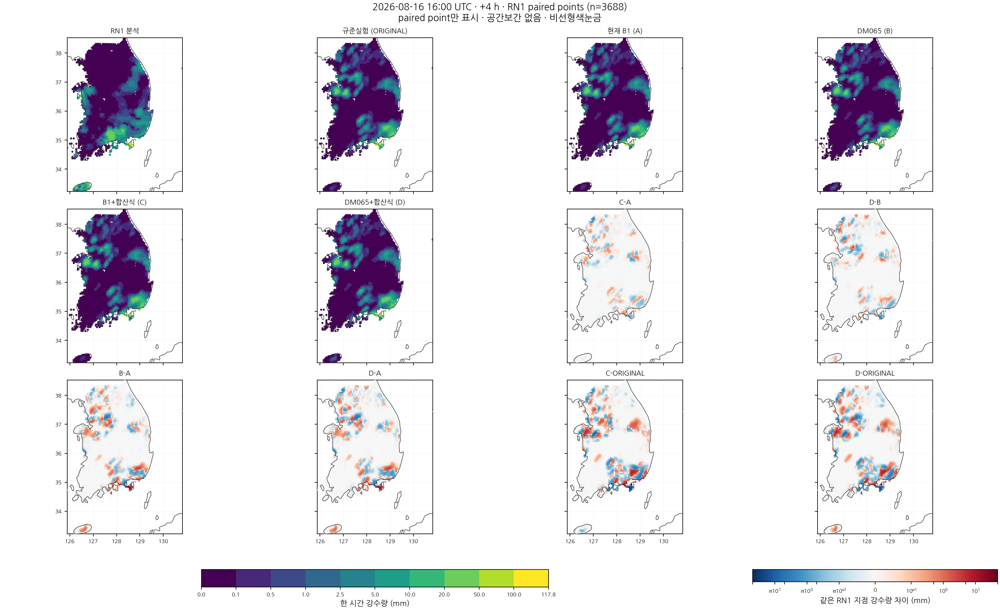
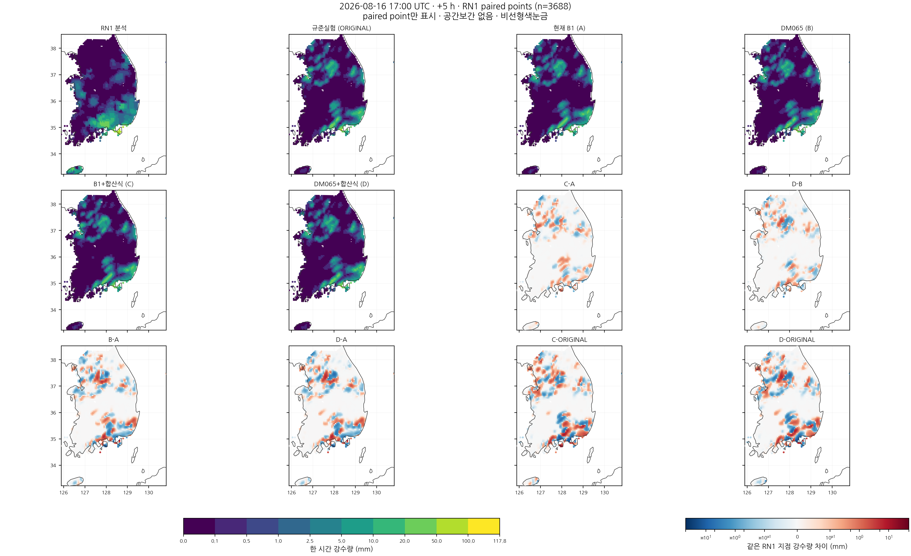
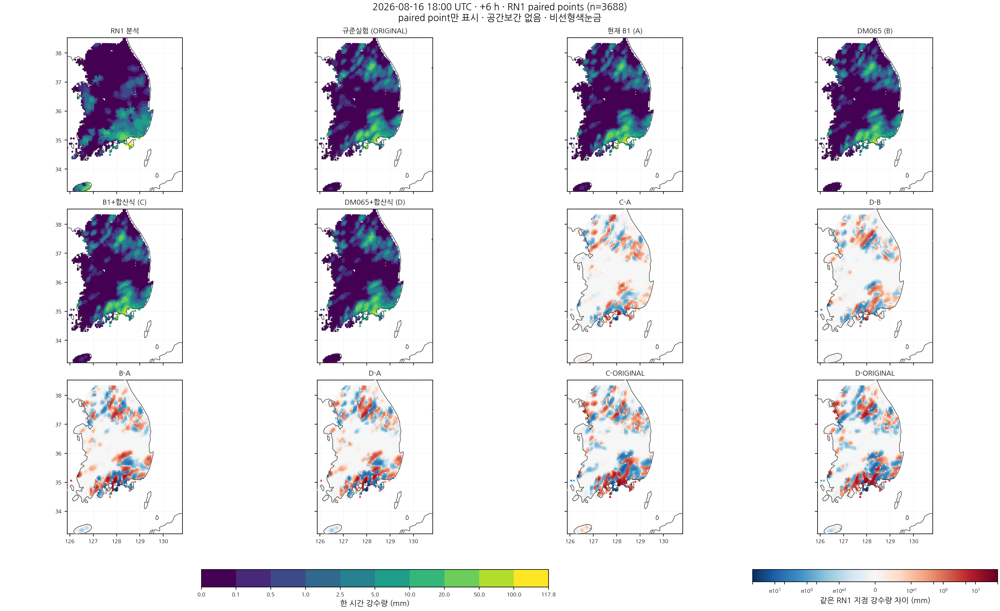
Six separate CSI thresholds and six hourly RN1 maps. All map panels use paired sample points without spatial interpolation. Analysis receipt SHA-256: 53cdf3da71cd47114f8e0806b47987b0b1d9b15128a91a127ce873cd921c8839
Full lead × threshold score tables










